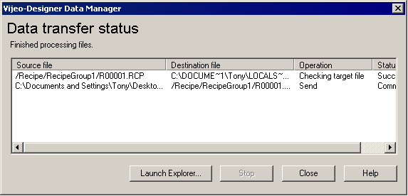

|
|
|
|
|
|
|
|
Once the data transfer (send or retrieve) or the data conversion operation begins, the Data Manager Status window appears and displays the operation status. Once files have been converted or transferred successfully, click the Launch Explorer button to open the output folder in Windows Explorer.
This section describes:

When a data transfer operation is started, the Data Transfer status dialog box shows information on:
Source File - Location and name of the source file being retrieved.
Destination - Location of the output folder.
Operation - The current operation.
Status - The status of the transfer.
When a data conversion operation is started, the Data Transfer Status dialog box shows information on:
Source File - Displays the name and location of the source file being converted.
Status - Displays the conversion status.
Status messages inform the user of the operation's progress and if any errors have occurred during the operation.
The table below describes the status messages and some solutions for solving errors.
|
Status Message |
Description |
Solution |
|
Could not create output directory. |
The output directory could not be created in the output folder. |
Check if you have read/write access to the output folder. |
|
Output folder is required. |
The output folder has not been defined. |
Define the output folder. |
|
File exists |
A file with the same name already exists in the output folder. |
Delete the file in the output folder or select Overwrite if file exists in the Options tab. |
|
Input file: open error |
The input file cannot be opened by the Data Manager. |
File may be open and locked by a different application. Close all open applications. |
|
Output file: open error. File may be Read-only. |
The output file cannot be opened. |
Check if you have read/write access to the file. |
|
Input file: read error |
The input file cannot be read. |
There may be a problem with your hardware. Check your hard disk for errors. |
|
Not a valid DAT file |
The log file you are trying to convert is invalid. |
Make sure you are converting a valid log file (.dat). |
|
Input file: version not supported |
The input file has been created with a Vijeo-Designer Runtime version that is not supported by the Data Manager. |
You need to upgrade Vijeo-Designer Runtime to the most current version. |
|
File read/write error |
The file cannot be read or written. |
There may be a problem with your hardware. Check your hard disk for errors. |
|
Disk full. Conversion Stopped. |
Your hard disk is full. |
Free up space on your hard drive. |
|
Error Allocating Memory |
Not enough memory can be allocated to the Data Manager. |
Close all window applications and then try to run Data Manager again. |
|
Recipe data file may be corrupted. Cannot import data |
The recipe file cannot be imported because it may be corrupted. |
The recipe file may have become corrupted during the retrieving process. Try retrieving the recipe again. The recipe file may have become corrupted when the file was exported. Try exporting the recipe again. There may be a problem with your hardware. Check your hard disk for errors. |